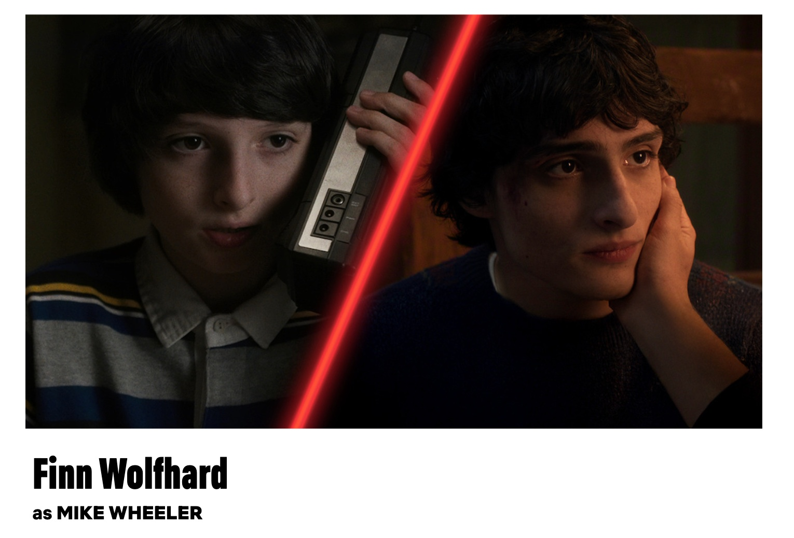
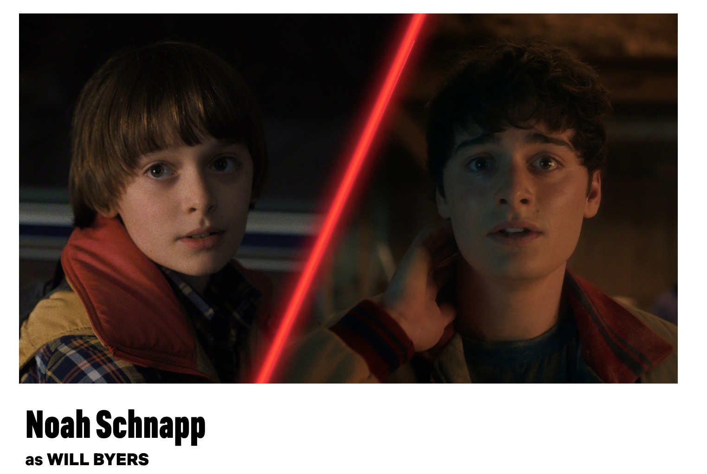
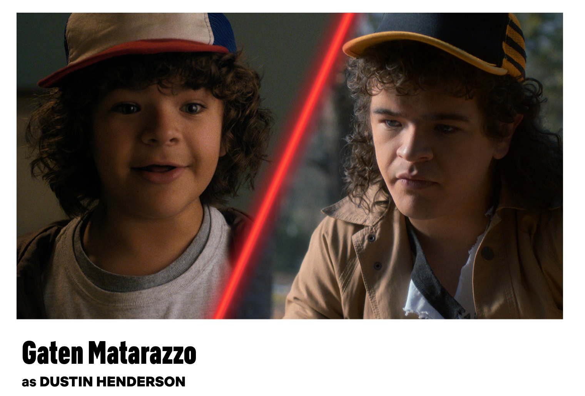
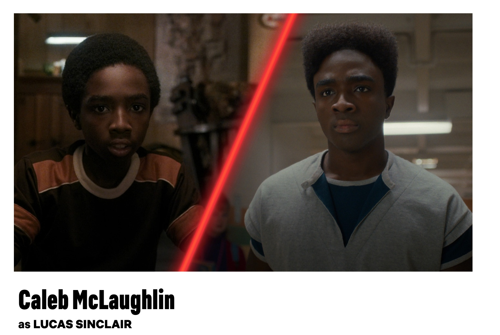
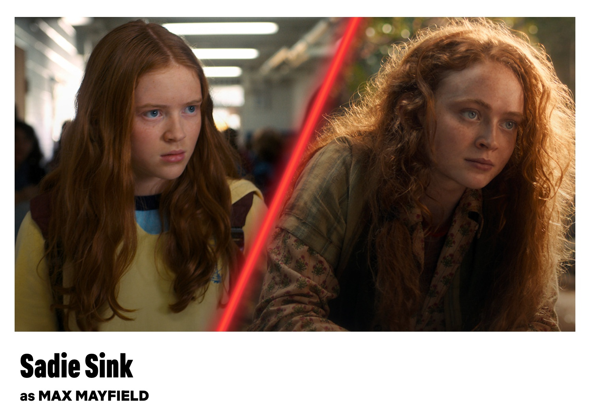
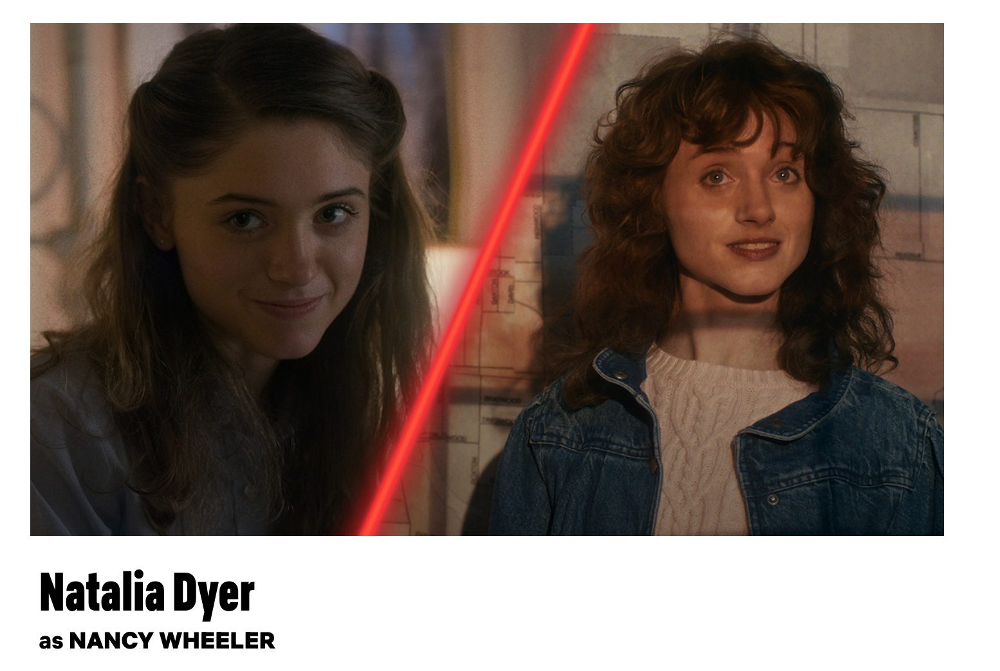
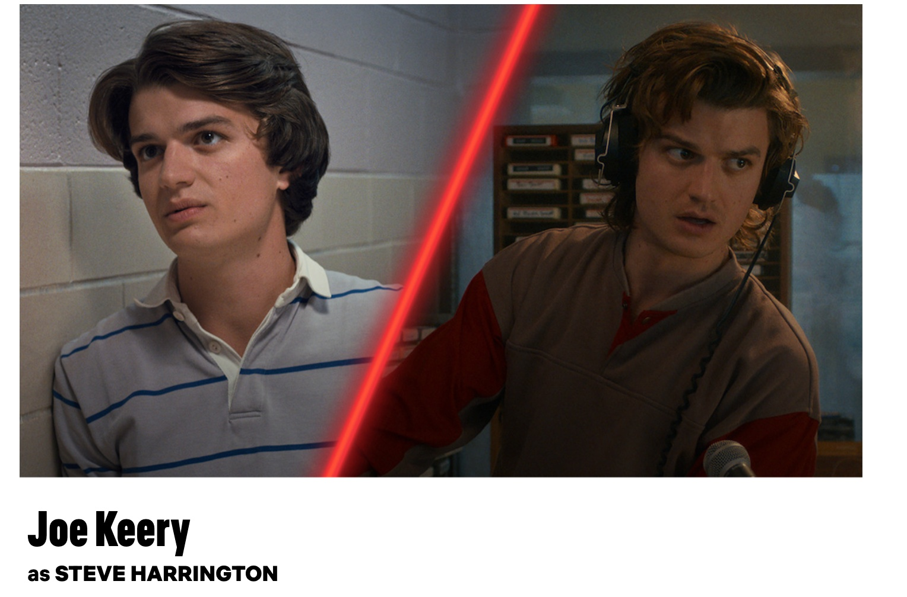
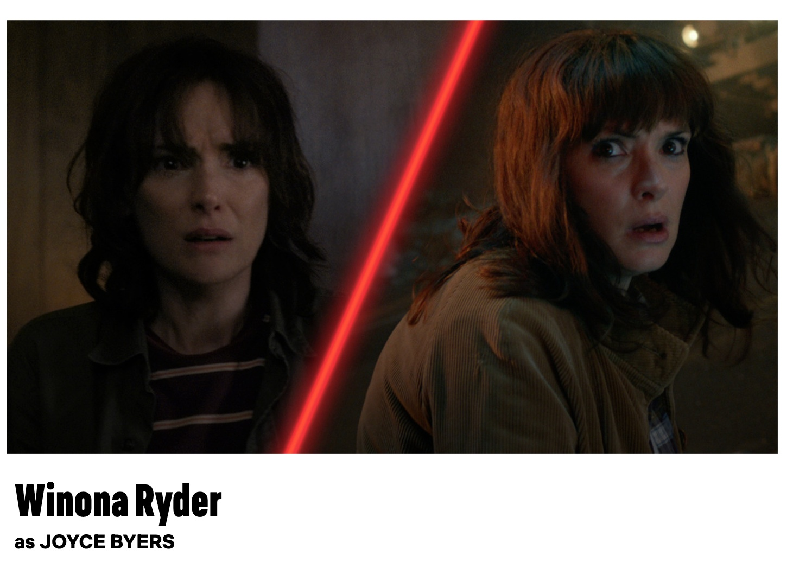

Heroes of Hawkins
Friendship • Courage • Sacrifice
Stranger Things5 returns to Hawkins for one last adventure. Set in the fall of 1987, the final season follows the aftermath of Season 4, as the town struggles with the devastating Rift openings and the growing threat of Vecna. With Hawkins under military lockdown and Vecna still missing, Eleven and her friends must reunite for their biggest battle yet. According to creators Ross and Matt Duffer, the story begins in chaos, with the heroes facing the consequences of their greatest defeat. Featuring returning favorites, new faces, and higher stakes than ever.
Meet the heroes, villains, and legends who shaped the fate of Hawkins.
A young girl with telepathic and psychokinetic powers, Eleven is a test experiment from Hawkins National Laboratory who escapes and finds safety in the town. Eleven eventually becomes adopted by Hopper and changes her name to Jane and begins getting adjusted to her normal life with the other kids of Hawkins

The middle child of the Wheeler Family, Mike is one of Will Byers’ best friends and one of the leaders of the Hawkins group. In Season 1, Mike and Eleven get closer to one another and throughout the series, begin a romantic relationship with each other.

“Stranger Things” all began with the disappearance of Will Byers in the first episode of Season 1. Though he is rescued at the end of the first season, Will never quite shakes his unique connection to the Upside Down, often enduring telekinetic and foreboding visions throughout the series.

He brings intelligence, humor, and inventive problem-solving to the group. Dustin is one of the members of the Party and often teams up with Steve and the rest of the Hawkins team to solve what’s going on in the Upside Down.

He is brave, loyal, and always ready to protect his friends when danger strikes Hawkins.he on-and-off love-interest of Max Mayfield. Though Lucas briefly separated from the group when he joined the Hawkins High School basketball team in Season 4, by the end of that season, he was back with his friends and at Max’s side when she fought off Vecna

Her debut as the clever and fearless Max Mayfield in Season 2. By Season 3, Max was dating Lucas, and by Season 4, they had broken up. Nevertheless, they reunited as she became the target of Vecna

she is determined, intelligent, and fearless in uncovering the dark secrets of Hawkins. Mike’s older sister, Nancy Wheeler is an inquisitive and ambitious hero, determined to get to the bottom of all of Hawkins’ secrets, be them paranormal or otherwise.

As Steve Harrington, he evolves from a popular high school student into a courageous protector and trusted leader of the group.

A reserved young man who has run the gamut of emotions since his debut as a wallflowery teenage shutterbug in Season 1. He is protective and supportive of his brother Will, but sometimes distant in his relationship with Nancy and frequently at odds with Steve as a result.

The mother of Will and Jonathan Byers, Joyce is a single mother who is dedicated to protecting her children and protecting the town of Hawkins from the danger that lurks in the Upside Down. As Joyce Byers, she is a devoted mother whose courage and persistence drive her to protect her family at any cost.

The chief of Hawkins Police Department, where he oversees the town from criminal activity. After the death of his daughter Sara from cancer, Hopper takes in Eleven as her father figure and guides her throughout her adolescence as her powers grow stronger.

Jamie Campbell Bower plays Vecna, the primary villain of the series and main antagonist of Season 4. His human identity is Henry Creel, and he was born with supernatural abilities. He is also known as Number One and has a shared past with Eleven as subjects at Hawkins Lab.
To be Continue...